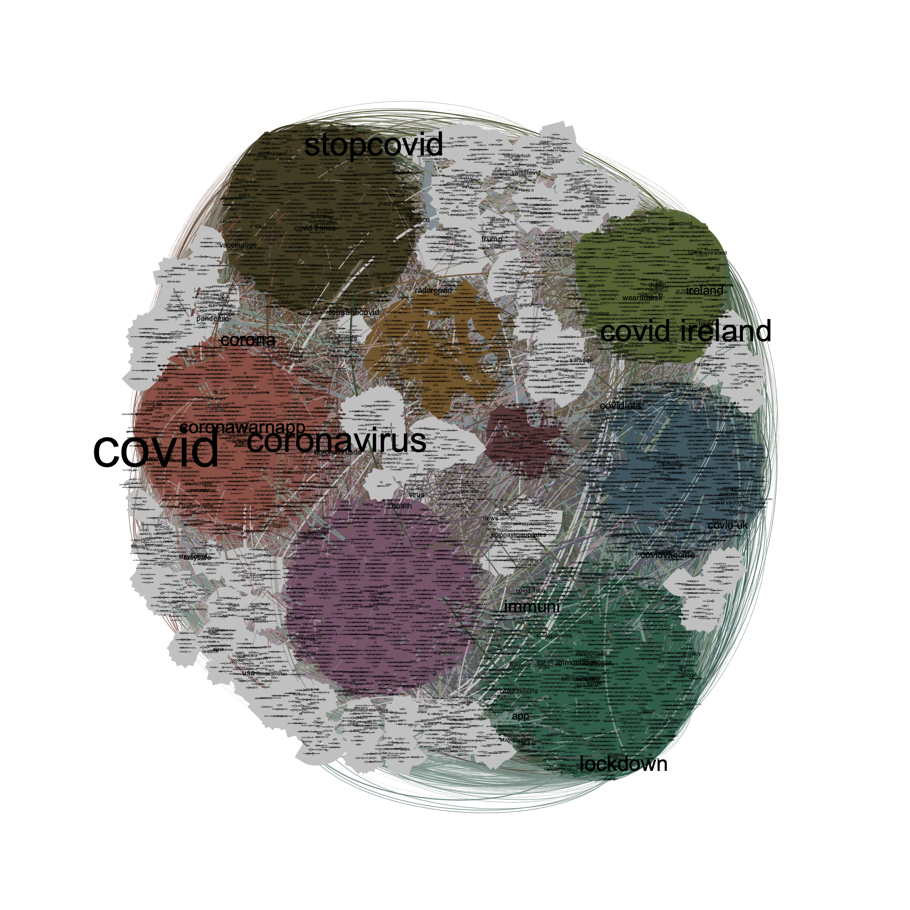

Sentiment analysis about Contact tracing apps
Network hashtags

The picture shows the network hashtags of 400,000 tweets about mobile contact tracing appsand collected since July 2020.
The size of the nodes denoted the co-occurrence frequency with the others hashtags expressed with the degree centrality measure.
Each color represents a community calculated using the Louvain method [LOUVAIN-2008] where the hashtags are closely related.
E.g, for the orange community the topic seems “Healt and Healtcare”. Note that the colours of the community are computed randomly using standard color palettes.
The Louvian method detected 8 main communities where the central hashtags is the name of
contact tracing apps. For example the red community represents the Italian contact tracing apps Immuni,
the green community the Irish contact tracing apps. Furthermore, in gray there are small communities
where the hashtags are related for most of theme by political entities or geographic names.